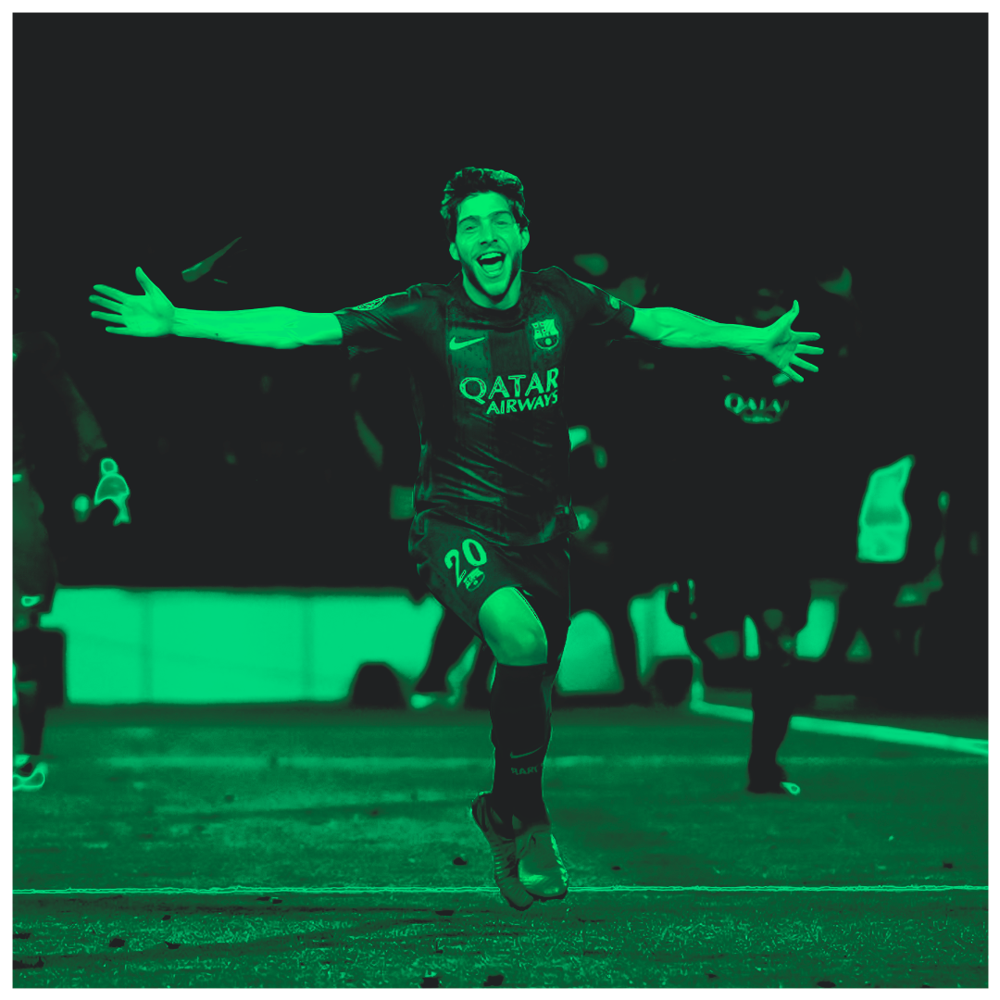

QUI SOM?
8 de març de 2017: minut 90+5 de la segona part, el partit està a punt d'acabar i el PSG es qualificarà per la següent ronda de Champions. Després del rebuig d'una falta, una centrada de Neymar es troba amb peu dret Sergi Roberto i aquest l'envia al fons de la xarxa. D'aquesta manera naixia'' LA REMUNTADA'' que canviaria la manera de viure el futbol a tot arreu. Nosaltres, amb el mateix propòsit hem començat aquest projecte: portar-te notícies, històries i informació atemporal sobre el futbol. Volem oferir-te una nova mirada, un valor afegit que transcendeixi el joc i et connecti amb la seva essència. Aquí, el futbol és més que un esport; és una forma de viure.